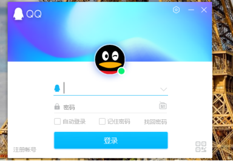
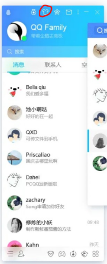

腾讯QQ
腾讯QQ介绍
1.简介
腾讯QQ，简称QQ，是一款基于互联网的即时通信软件。
2.QQ有哪些作用？
QQ已经覆盖了Windows、macOS、iPadOS、Android、iOS、Windows Phone、Linux等多种主流平台。其标志是一只戴着红色围巾的小企鹅。 腾讯QQ支持在线聊天、视频通话、点对点断点续传文件、共享文件、网络硬盘、自定义面板、QQ邮箱等多种功能，并可与多种通讯终端相连。
QQ功能介绍(PC端)
QQ是我们最常用的聊天软件之一，PC端的QQ更是一个时代的标志。但其实QQ中还有许多小功能可能不为人知，下面我们来介绍一下。
1.登录QQ

建议使用手机QQ版扫描二维码比较安全。
2.找回密码
点击跳转至QQ安全中心进入身份验证，根据指引完成找回。
3.个性装扮

如图，点击打开个性装扮页面。
可以的选择自己喜欢的皮肤和气泡，也可以自定义：
打开文件，选择
4.QQ空间
如图，点击打开QQ空间。
QQ空间里面还有很多有趣的内容哦~
5.天气
把鼠标放在头像和签名的右方可以查看当前城市的天气。
6.文件助手
文件助手可以查看和操作最近在QQ PC端上的照片、文档。
7.聊天记录备份与恢复
首先，打开并登录电脑端QQ，单击电脑QQ左下角的“主菜单”图标，再选择“聊天记录备份与恢复”。
然后在弹出的框中单击“备份聊天记录至电脑”。
将手机跟电脑保持在同一网络环境，再点击“选择聊天记录”。
然后选择需要备份的好友及其什么时间、什么内容的记录，点击完成，即可将聊天记录文件备份到电脑上。
8.加好友
点击添加好友。
可以搜索好友的QQ号添加好友，同样也可以搜索群号加群。
9.腾讯文档
腾讯文档是一款可多人同时编辑的在线文档，支持在线Word/Excel/PPT/PDF/收集表/思维导图/流程图多种类型。
可以在电脑端（PC客户端、腾讯文档网页版）、移动端（腾讯文档App、腾讯文档微信/QQ小程序）、iPad（腾讯文档APP）等多类型设备上随时随地查看和修改文档。
打开网页就能查看和编辑，云端实时保存，权限安全可控。
点击进入腾讯文档。
10.QQ页游
QQ为爱玩游戏的伙伴提供了页游功能。
点击进入QQ页游。
11.应用管理器
可以通过应用管理器管理QQ应用。
点击进入应用管理器。
12.QQ邮箱
QQ邮箱可以用来收发电子邮件。
点击进入QQ邮箱。
13.视频用户
可以使用QQ和他人进行视频聊天，该功能可以通过视频用户管理。
点击进入视频用户。
在这个设置里设置视频的相关设置。
这还只是QQ功能的冰山一角，移动端QQ功能更加强大，需要我们去探索和发现。
关于QQ
2019年12月12日，《汇桔网·2019胡润品牌榜》发布，QQ以1200亿元品牌价值排名第15，上榜2019最具价值中国民营品牌十强,排名第7，上榜2019生活服务品牌价值全国排名第2，民营排名第2。
2020年1月，2020年全球最具价值500大品牌榜发布，腾讯QQ排名第27位。
然而，QQ如此蓬勃发展的同时，背后也暗藏着一些问题，比如数据泄露问题、安全测试性差、闪退问题、侵害用户权益等，还需要腾讯厂商好好反思改进。
近期，有网友传言说第一批90后已离开QQ，但数据显示并没有。
虽然QQ目前还有超过8.43亿活跃用户，但也确实面临不小的挑战。
人们有微信、QQ，也还有陌陌；人们有Facebook，但还有Snapchat。
不同人都不同的圈层，有不同的习惯偏好，生活方式、文化理念、兴趣爱好、社交场景等等。
社交应用对于他们来说不只是通信，而是具有社交分享、偶像互动、自我表达等等多重价值，不是一个应用可以满足的，因此QQ在年轻化用户上还有很多机会。
让离开的用户回来，不是QQ的重点。
抓住源源不断的年轻人，是QQ最大的机会，QQ确实还有很多事情要做，进而更好地俘获年轻人特别是00甚至10后用户。